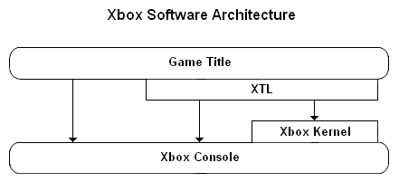

The Xbox was designed by people who know and love games. In fact, much of the design of the Xbox is based on suggestions and feedback from developers in the game industry.
Xbox is all about the games, and the Xbox system software is designed with one goal in mind: helping developers create awesome games. That goal is the driving factor and focal point of the Xbox software architecture. The system software is not Windows, it is not designed to be a platform, or to be restrictive or limiting. We want games to be as close as possible to the Xbox hardware in order to realize maximum performance potential.
The design goals that spring out of that one primary goal are that the system software be small, fast, close to the hardware, and predictable. In examining the software architecture, you'll see time and again examples of the decisions we've made to put control of the console directly into the hands of game developers.
Four main software components work together to provide the complete Xbox software architecture: the kernel, the Xbox Title Libraries (XTL), game titles, and the Xbox Dashboard. The following diagram illustrates how these components fit together:

The Xbox kernel is part of the Xbox console, residing in ROM on every console shipped. The XTL and game title software are linked together and distributed on game discs. You'll notice that the Xbox Dashboard is not shown in the diagram, because the Dashboard can be thought of as just another game title, with the special purpose of allowing interaction with the Xbox when no game disc is inserted into the console.
The kernel essentially contains the minimum code necessary to load game titles (or the Xbox Dashboard) and begin executing them. This includes:
The kernel is the component closest to the Xbox hardware, although the other software components, especially the XTL, can (and do) write directly to the hardware when it is beneficial to do so. For a more detailed look at the kernel, see Xbox Kernel Overview.
The XTL is a collection of static libraries containing functions that game titles link to and call. These libraries contain the bulk of the code that titles use to interface with the Xbox console. The XTL offers the following advantages:
The XTL contains routines to perform a wide variety of tasks on the Xbox. These functions are not system calls, traps, or imports into dynamic libraries; they are functions that are statically linked into the game when the title is compiled and that ship with the title on the game disc. Developers need not worry about their game's compatibility with specific XTL versions or about functions changing underneath them, because the game ships with the exact version of the XTL it requires and always uses that version when executing.
The title can choose which XTL functions to use, link with them, and then not pay any memory, size, or performance hit for XTL functions it chooses not to call. In fact, except for a few cases outlined by the certification requirements, a title could bypass the XTL and write directly to the hardware if it really needed to. For this reason, the XTL provides functions that are as fast, clean, and reliable as possible, giving developers an excellent base upon which to build their games. The XTL functions are also tested against all versions of the hardware components used on the Xbox (including those that might vary slightly depending on manufacturer or across hardware revisions)— another good reason to rely on the XTL for hardware access.
For a more detailed look at the XTL, see XTL Overview.
Game titles provide the most important software of all: the game! Although games do make calls into the XTL libraries, the bulk of the software in a game title is the game code itself. The XTL provides no UI (User Interface) elements or routines such as icons, windows, scrollbars, cursors, or message boxes. The look, feel, and design elements of the game are completely in the hands of the game designers and programmers. The game title uses XTL libraries and routines to communicate with the Xbox hardware, including the graphics, peripherals (such as the controllers and memory units), sound, file systems, and system software of the Xbox.
The Xbox Dashboard is similar to other game titles in architecture, using XTL functions to communicate with the Xbox hardware and to simplify programming tasks. The Dashboard enables interaction with the Xbox when not playing a game. Unlike an ordinary game title, the Dashboard is stored on the Xbox hard disk rather than on a game disc. This means it is always available, even when no disc is inserted in the Xbox.
The Dashboard provides a DVD movie player with standard movie viewing features and controls. This player is activated whenever a DVD movie is inserted into the Xbox disc tray (provided the console has an attached DVD infrared receiver). The Dashboard also has a music CD player that is launched whenever a music CD is inserted into the tray. From the Dashboard, users can also copy songs from their favorite CDs onto the Xbox hard disk for later listening during gameplay. The Dashboard's main user interface is launched whenever the Xbox is turned on without any disc (game, DVD, or CD) in the tray. This portion of the Dashboard enables users to configure settings and preferences, such as sound and video settings, parental control, and language.
From the Dashboard, users can manage the storage space allocated to game titles on the hard disk and the memory units. The dash displays the amount of storage being used by game titles and gives the user the option of reclaiming that storage.